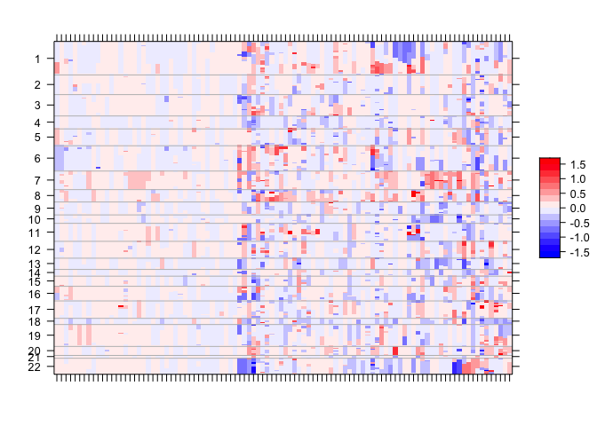

‼️ ⚠️ NOTE: This package is currently under active development with a new stable release expected April 30th, 2022. For code written before 2022-03-23, please use the previous stable version (v1.1.0)⚠️‼️
You can install the pre-2022-03-23 version with:
remotes::install_github('MSKCC-Epi-Bio/gnomeR@v1.1.0')Installation
You can install the development version of gnomeR from GitHub with:
# install.packages("devtools")
devtools::install_github("MSKCC-Epi-Bio/gnomeR")Along with its companion package for cbioPortal data download:
devtools::install_github("karissawhiting/cbioportalr")Introduction
the gnomeR package provides a consistent framework for genetic data processing, visualization and analysis. This is primarily targeted to IMPACT datasets but can also be applied to any genomic data provided by CbioPortal. With {gnomeR} and {cbioportalR} you can:
- Download and gather data from CbioPortal - Pull from cBioPortal data base by study ID or sample ID.
- OncoKB annotate data - Filter genomic data for known oncogenic alterations.
- Process genomic data - Process retrieved mutation/maf, fusions, copy-number alteration, and segmentation data (when available) into an analysis-ready formats.
- Visualize processed data - Create OncoPrints, heatmaps and summary plots from processed data.
- Analyzing processed data- Analyze associations between genomic variables and clinical variables or outcomes with summary tables, advanced visualizations, and univariate models.
Getting Set up
{gnomeR} works with any genomic data that follows cBioPortal guidelines for mutation, CNA, or fusion data file formats.
If you wish to pull the data directly from CbioPortal, see how to get set up with credentials with the {cBioPortalR} package.
If you want to oncoKB annotate your data, you need to acquire credentials from the oncoKB website.
Processing Genomic Data
The below examples uses the data sets mut, fusion, cna which were pulled from cBioPortal and are included in the package as example data sets. We will sample 100 samples for examples:
set.seed(123)
mut <- gnomeR::mut
cna <- gnomeR::cna
fusion <- gnomeR::fusion
un <- unique(mut$Tumor_Sample_Barcode)
sample_patients <- sample(un, size = 100, replace = FALSE)The main data processing function is gene_binary() which takes mutation, CNA and fusion files as input, and outputs a binary matrix of N rows (number of samples) by M genes included in the data set. We can specify which patients are included which will force all patients in resulting dataframe, even if they have no alterations.
gen_dat <- create_gene_binary(samples = sample_patients,
maf = mut,
fusion = fusion,
cna = cna, rm_empty = TRUE)
kable(gen_dat[1:5,1:5], row.names = TRUE)| OSBPL9.fus | ALK.fus | EML4.fus | MLL3.fus | BRCA2.fus | |
|---|---|---|---|---|---|
| P-0010604-T01-IM5 | 0 | 0 | 0 | 1 | 0 |
| P-0002651-T01-IM3 | 0 | 0 | 0 | 0 | 0 |
| P-0000270-T01-IM3 | 0 | 0 | 0 | 0 | 0 |
| P-0002915-T01-IM3 | 0 | 0 | 0 | 0 | 0 |
| P-0011099-T01-IM5 | 0 | 0 | 0 | 0 | 0 |
Visualize
You can visualize your processed and raw alteration data sets using {gnomeR}’s many data visualization functions.
Quickly visualize mutation characteristics with ggvarclass(), ggvartype(), ggsnvclass(), ggsamplevar(), ggtopgenes(), gggenecor(), and ggcomut().
ggvarclass(mutation = mut)
The wrapper function mutation_viz() will generate a list with the most commonly used plot which you can pass into a plot assembly framework like {patchwork}:
list_of_plots <- mutation_viz(mutation = mut)
patchwork::wrap_plots(list_of_plots, ncol = 2) &
ggplot2::theme(text = ggplot2::element_text(size = 8))
ggheatmap() allows you to visualize mutation, CNA and fusion data all in one heatmap:
# filter only those with alterations
gen_dat <- gen_dat %>%
rowwise() %>%
mutate(total_alterations = sum(c_across(everything()))) %>%
filter(total_alterations > 1) %>%
select(-total_alterations) %>%
ungroup()
select_gen_dat <- gen_dat[, (purrr::map(gen_dat, ~sum(.x, na.rm = TRUE)) > 0)]
ggheatmap(select_gen_dat[, 1:50])
Summarize & Analyze
You can tabulate summarize your genomic data frame using the tbl_genomic() function, a wrapper for gtsummary::tbl_summary().
gen_dat <- gen_dat %>%
dplyr::mutate(trt_status = sample(x = c("pre-trt", "post-trt"),
size = nrow(gen_dat), replace = TRUE))
gene_tbl_trt <- gen_dat %>%
tbl_genomic(freq_cutoff = .1, by = trt_status) %>%
gtsummary::add_p()
gene_tbl_trtAdditionally, you can analyze custom pathways, or a set of default gene pathways using add_pathways():
path_by_trt <- gen_dat %>%
add_pathways() %>%
select(trt_status, contains("pathway_")) %>%
tbl_genomic(by = trt_status) %>%
gtsummary::add_p()
path_by_trtFurther analytical tools
Along with mutation, cna and fusion data, {gnomeR} also allows analysis and visualization of FACETs data. FACETs is an allele-specific copy number tool and open-source software with a broad application to whole genome, whole-exome, as well as targeted panel sequencing platforms. It is a fully integrated stand-alone pipeline that includes sequencing BAM file post-processing, joint segmentation of total- and allele-specific read counts, and integer copy number calls corrected for tumor purity, ploidy and clonal heterogeneity, with comprehensive output.
You can vizualize this data using facets_heatmap()
select_samples <- sample(unique(seg$ID), 100)
p.heat <- facets_heatmap(seg = seg, samples = select_samples, min_purity = 0)
p.heat$p
The primary goal of gnomeR not being in depth analysis of genomic data but rather reliable, modular and reproducible framework for processing various types of genomic data. For users interested in large scale genomic analytical methods we compiled various packages developed by Department of Epidemiology and Biostatistics, Memorial Sloan-Kettering Cancer Center under an umbrella R package, gnomeVerse.
Contributing
Please note that the gnomeR project is released with a Contributor Code of Conduct. By contributing to this project, you agree to abide by its terms.
Thank you to all contributors!
@akriti21, @arorarshi, @AxelitoMartin, @carokos, @ChristineZ-msk, @edrill, @jalavery, @jflynn264, @karissawhiting, @michaelcurry1123, and @mljaniczek